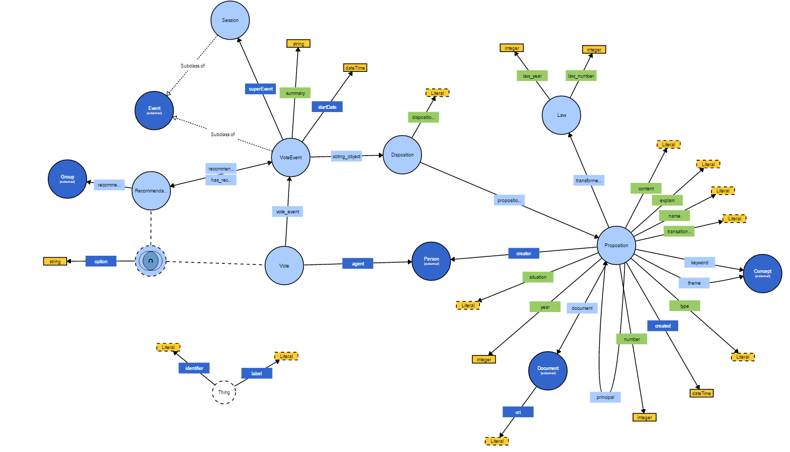

This project was developed during the classes of Semantic Web in 2015.2 at PUC-Rio.
Professor: Daniel Schwabe.
The students are: Alexander Chaves and Jéssica Almeida.
The project consists in make a triplification process for the voting data collected from the Câmara Federal webservers, making a process of modelling this data in RDF. To achive this goal we use Karma (http://usc-isi-i2.github.io/karma/) as our data integration tool applying a transformation from some XML files, into a single RDF Model, using well known ontologies, and constructing our own ontology.
The results of this work are a preliminarly ontology that represents the Voting Process by using the concepts of Propositions, Sessions, Votations, Votes, Recomendations and some other relative entities of the voting process.
The ontology we build is based on a set of principal Classes and Properties that allow a representation of voting process and are better described below.
1. Classes and properties
Term Ontology Description Popolo equivalent {{classAndProperty.term}} {{classAndProperty.mapping}} {{classAndProperty.mapping}} {{classAndProperty.description}} {{classAndProperty.popoloEquivalent}}
2. Our ontology Download
